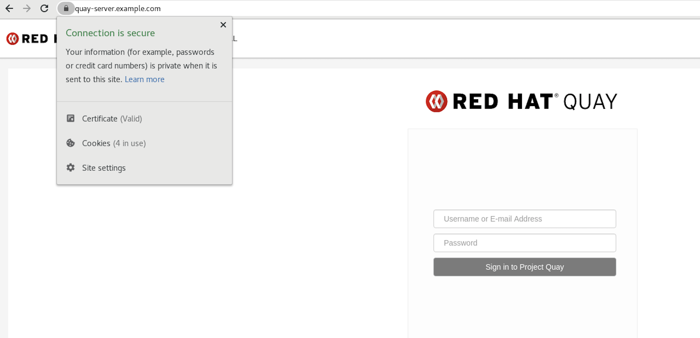
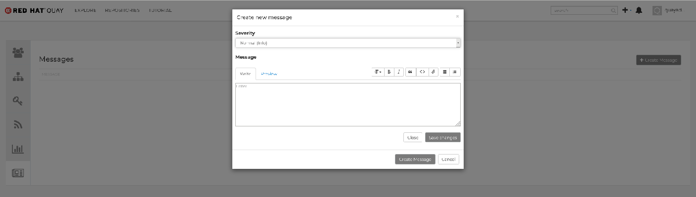
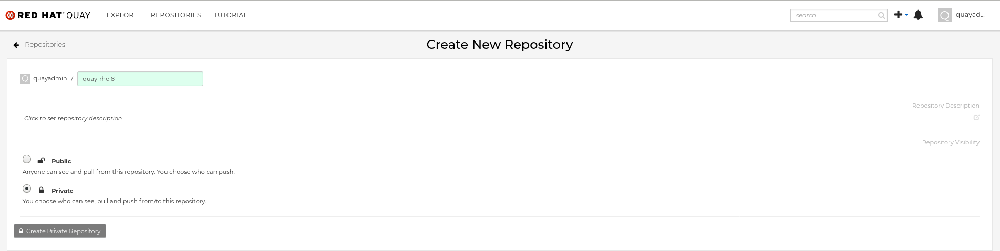
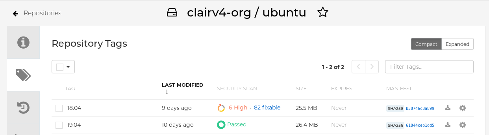

Deploy Red Hat Quay for proof-of-concept (non-production) purposes
Deploy Red Hat Quay
Abstract
- Preface
- 1. Overview
- 2. Getting started with Red Hat Quay
- 3. Advanced Red Hat Quay deployment
- 3.1. Using SSL/TLS
- 3.1.1. Creating a certificate authority and signing a certificate
- 3.1.2. Configuring SSL/TLS using the Red Hat Quay UI
- 3.1.3. Configuring SSL using the command line interface
- 3.1.4. Testing SSL configuration using the command line
- 3.1.5. Testing SSL configuration using the browser
- 3.1.6. Configuring podman to trust the Certificate Authority
- 3.1.7. Configuring the system to trust the certificate authority
- 3.2. Red Hat Quay superuser
- 3.3. Repository Mirroring
- 3.4. Clair for Red Hat Quay
- 3.5. Restarting containers
- 3.6. Federal Information Processing Standard (FIPS) readiness and compliance
- 3.1. Using SSL/TLS
- 4. Next steps
Preface
Red Hat Quay is an enterprise-quality registry for building, securing and serving container images. This procedure describes how to deploy Red Hat Quay for proof-of-concept (non-production) purposes.
Chapter 1. Overview
Red Hat Quay includes the following features:
- High availability
- Geo-replication
- Repository mirroring
- Docker v2, schema 2 (multi-arch) support
- Continuous integration
- Security scanning with Clair
- Custom log rotation
- Zero downtime garbage collection
- 24/7 support
Red Hat Quay provides support for the following:
- Multiple authentication and access methods
- Multiple storage backends
- Custom certificates for Quay, Clair, and storage backends
- Application registries
- Different container image types
1.1. Architecture
Red Hat Quay includes several core components, both internal and external.
1.1.1. Internal components
Red Hat Quay includes the following internal components:
-
Quay (container registry). Runs the
Quaycontainer as a service, consisting of several components in the pod. - Clair. Scans container images for vulnerabilities and suggests fixes.
1.1.2. External components
Red Hat Quay includes the following external components:
- Database. Used by Red Hat Quay as its primary metadata storage. Note that this is not for image storage.
- Redis (key-value store). Stores live builder logs and the Red Hat Quay tutorial. Also includes the locking mechanism that is required for garbage collection.
Cloud storage. For supported deployments, one of the following storage types must be used:
- Public cloud storage. In public cloud environments, you should use the cloud provider’s object storage, such as Amazon Web Services’s Amazon S3 or Google Cloud’s Google Cloud Storage.
- Private cloud storage. In private clouds, an S3 or Swift compliant Object Store is needed, such as Ceph RADOS, or OpenStack Swift.
Do not use "Locally mounted directory" Storage Engine for any production configurations. Mounted NFS volumes are not supported. Local storage is meant for Red Hat Quay test-only installations.
Chapter 2. Getting started with Red Hat Quay
The Red Hat Quay registry can be deployed for non-production purposes on a single machine, either physical or virtual.
2.1. Prerequisites
Red Hat Enterprise Linux (RHEL) 8
- To obtain the latest version of Red Hat Enterprise Linux (RHEL) 8, see Downlad Red Hat Enterprise Linux.
- For installation instructions, see the Product Documentation for Red Hat Enterprise Linux 8.
- An active subscription to Red Hat
- Two or more virtual CPUs
- 4 GB or more of RAM
Approximately 30 GB of disk space on your test system, which can be broken down as follows:
- Approximately 10 GB of disk space for the Red Hat Enterprise Linux (RHEL) operating system.
- Approximately 10 GB of disk space for Docker storage for running three containers.
Approximately 10 GB of disk space for Red Hat Quay local storage.
NoteCEPH or other local storage might require more memory.
More information on sizing can be found at Quay 3.x Sizing Guidlines.
Red Hat Enterprise Linux (RHEL) 8 is recommended for highly available, production quality deployments of Red Hat Quay 3.9. RHEL 7 has not been tested with Red Hat Quay 3.9, and will be deprecated in a future release.
2.1.1. Using Podman
This document uses Podman for creating and deploying containers. For more information on Podman and related technologies, see Building, running, and managing Linux containers on Red Hat Enterprise Linux 8.
If you do not have Podman installed on your system, the use of equivalent Docker commands might be possible, however this is not recommended. Docker has not been tested with Red Hat Quay 3.9, and will be deprecated in a future release. Podman is recommended for highly available, production quality deployments of Red Hat Quay 3.9.
2.2. Preparing Red Hat Enterprise Linux for a Red Hat Quay proof of concept deployment
Use the following procedures to configure Red Hat Enterprise Linux (RHEL) for a Red Hat Quay proof of concept deployment.
2.2.1. Install and register the RHEL server
Use the following procedure to configure the Red Hat Enterprise Linux (RHEL) server for a Red Hat Quay proof of concept deployment.
Procedure
- Install the latest RHEL 8 server. You can do a minimal, shell-access only install, or Server plus GUI if you want a desktop.
- Register and subscribe your RHEL server system as described in How to register and subscribe a RHEL system to the Red Hat Customer Portal using Red Hat Subscription-Manager
Enter the following commands to register your system and list available subscriptions. Choose an available RHEL server subscription, attach to its pool ID, and upgrade to the latest software:
# subscription-manager register --username=<user_name> --password=<password> # subscription-manager refresh # subscription-manager list --available # subscription-manager attach --pool=<pool_id> # yum update -y
2.2.2. Installing Podman
Use the following procedure to install Podman.
Procedure
Enter the following command to install Podman:
$ sudo yum install -y podman
Alternatively, you can install the
container-toolsmodule, which pulls in the full set of container software packages:$ sudo yum module install -y container-tools
2.2.3. Registry authentication
Use the following procedure to authenticate your registry for a Red Hat Quay proof of concept.
Procedure
Set up authentication to
registry.redhat.ioby following the Red Hat Container Registry Authentication procedure. Setting up authentication allows you to pull theQuaycontainer.NoteThis differs from earlier versions of Red Hat Quay, when the images were hosted on Quay.io.
Enter the following command to log in to the registry:
$ sudo podman login registry.redhat.io
You are prompted to enter your
usernameandpassword.
2.2.4. Firewall configuration
If you have a firewall running on your system, you might have to add rules that allow access to Red Hat Quay. Use the following procedure to configure your firewall for a proof of concept deployment.
Procedure
The commands required depend on the ports that you have mapped on your system, for example:
$ firewall-cmd --permanent --add-port=80/tcp $ firewall-cmd --permanent --add-port=443/tcp $ firewall-cmd --permanent --add-port=5432/tcp $ firewall-cmd --permanent --add-port=5433/tcp $ firewall-cmd --permanent --add-port=6379/tcp $ firewall-cmd --reload
2.2.5. IP addressing and naming services
There are several ways to configure the component containers in Red Hat Quay so that they can communicate with each other, for example:
Using the IP addresses for the containers. You can determine the IP address for containers with
podman inspectand then use the values in the configuration tool when specifying the connection strings, for example:$ sudo podman inspect -f "{{.NetworkSettings.IPAddress}}" postgresql-quayThis approach is susceptible to host restarts, as the IP addresses for the containers will change after a reboot.
- Using a naming service. If you want your deployment to survive container restarts, which typically result in changed IP addresses, you can implement a naming service. For example, the dnsname plugin is used to allow containers to resolve each other by name.
-
Using the host network. You can use the
podman runcommand with the--net=hostoption and then use container ports on the host when specifying the addresses in the configuration. This option is susceptible to port conflicts when two containers want to use the same port. This method is not recommended. - Configuring port mapping. You can use port mappings to expose ports on the host and then use these ports in combination with the host IP address or host name.
This document uses port mapping and assumes a static IP address for your host system. Throughout the deployment, quay-sever.example.com is used with the 192.168.1.112 IP address. This information is established in the /etc/hosts file, for example:
$ cat /etc/hosts
Example output:
192.168.1.112 quay-server.example.com
Table 2.1. Sample proof of concept port mapping
| Component | Port mapping | Address |
|---|---|---|
|
Quay |
|
http://quay-server.example.com |
|
Postgres for Quay |
|
quay-server.example.com:5432 |
|
Redis |
|
quay-server.example.com:6379 |
|
Postgres for Clair V4 |
|
quay-server.example.com:5433 |
|
Clair V4 |
|
http://quay-server.example.com:8081 |
2.3. Configuring the database
Red Hat Quay requires a database for storing metadata. Postgres is used throughout this document and is recommended for highly available configurations. Alternatively, you can use MySQL with a similar approach to configuration as described below.
2.3.1. Setting up Postgres
For the Red Hat Quay proof of concept, a directory on the local file system to persist database data is used.
Procedure
In the installation folder, denoted here by the
$QUAYvariable, create a directory for the database data by entering the following command:$ mkdir -p $QUAY/postgres-quay
Set the appropriate permissions by entering the following command:
$ setfacl -m u:26:-wx $QUAY/postgres-quay
Start the
Postgrescontainer, specifying the username, password, and database name and port, with the volume definition for database data:$ sudo podman run -d --rm --name postgresql-quay \ -e POSTGRESQL_USER=quayuser \ -e POSTGRESQL_PASSWORD=quaypass \ -e POSTGRESQL_DATABASE=quay \ -e POSTGRESQL_ADMIN_PASSWORD=adminpass \ -p 5432:5432 \ -v $QUAY/postgres-quay:/var/lib/pgsql/data:Z \ registry.redhat.io/rhel8/postgresql-13:1-109
Ensure that the Postgres
pg_trgmmodule is installed by running the following command:$ sudo podman exec -it postgresql-quay /bin/bash -c 'echo "CREATE EXTENSION IF NOT EXISTS pg_trgm" | psql -d quay -U postgres'
NoteThe
pg_trgmmodule is required for theQuaycontainer.
2.4. Configuring Redis
Redis ia a key-value store that is used by Red Hat Quay for live builder logs and the Red Hat Quay tutorial.
2.4.1. Setting up Redis
Use the following procedure to deploy the Redis container for the Red Hat Quay proof of concept.
Procedure
Start the
Rediscontainer, specifying the port and password, by entering the following command:$ sudo podman run -d --rm --name redis \ -p 6379:6379 \ -e REDIS_PASSWORD=strongpassword \ registry.redhat.io/rhel8/redis-6:1-110
2.5. Configuring Red Hat Quay
Use the following procedure to generate a configuration file that details all components, including registry settings, the database, and Redis connection parameters.
Procedure
To generate a configuration file, enter the following command to run the
Quaycontainer inconfigmode. You must specify a password, for example, the stringsecret:$ sudo podman run --rm -it --name quay_config -p 80:8080 -p 443:8443 registry.redhat.io/quay/quay-rhel8:v3.9.0 config secret
Use your browser to access the user interface for the configuration tool at
http://quay-server.example.com.NoteThis documentation assumes that you have configured the
quay-server.example.comhostname in your/etc/hostsfile.- Log in with username and password specified
Log in with the username and password you set in Step 1 of Configuring Red Hat Quay.
NoteIf you followed this procedure, the username is quayconfig and the password is secret.
2.5.1. Red Hat Quay setup
In the Red Hat Quay configuration editor, you must enter the following credentials:
- Basic configuration
- Server configuration
- Database
- Redis
2.5.1.1. Basic configuration
Under Basic Configuration, populate the Registry Title and Registry Title Short fields. The default values can be used if they are populated.
2.5.1.2. Server configuration
Under Server Hostname, specify the HTTP host and port for the location where the registry will be accessible on the network.
If you followed the instructions in this documenter, enter quay-server.example.com.
2.5.1.3. Database
In the Database section, specify the connection details for the database that Red Hat Quay uses to store metadata.
If you followed the instructions in this document for deploying a proof of concept system, enter the following values:
- Database Type: Postgres
- Database Server: quay-server.example.com:5432
- Username: quayuser
- Password: quaypass
- Database Name: quay
2.5.1.4. Redis
The Redis key-value store is used to store real-time events and build logs.
If you followed the instructions in this document for deploying a proof-of-concept system, enter the following credentials under the Redis section:
- Redis Hostname: quay-server.example.com
- Redis port: 6379 (default)
- Redis password: strongpassword
2.5.2. Validate and download configuration
After all required fields have been set, validate your settings by clicking Validate Configuration Changes. If any errors are reported, continue editing your configuration until the settings are valid and Red Hat Quay can connect to your database and Redis servers.
After validation, download the Configuration file. Stop the Quay container that is running the configuration editor.
2.6. Deploying Red Hat Quay
2.6.1. Prerequisites
- The Red Hat Quay database is running.
- The Redis server is running.
- You have generated a valid configuration file.
-
You have stopped the
Quaycontainer that was running the configuration editor.
2.6.2. Preparing the configuration folder
Use the following procedure to prepare your Red Hat Quay configuration folder.
Procedure
Create a directory to copy the Red Hat Quay configuration bundle to:
$ mkdir $QUAY/config
Copy the generated Red Hat Quay configuration bundle to the directory:
$ cp ~/Downloads/quay-config.tar.gz ~/config
Change into the the directory:
$ cd $QUAY/config
Unpack the Red Hat Quay configuration bundle:
$ tar xvf quay-config.tar.gz
2.6.3. Prepare local storage for image data
Use the following procedure to set your local file system to store registry images.
Procedure
Create a local directory that will store registry images by entering the following command:
$ mkdir $QUAY/storage
Set the directory to store registry images:
$ setfacl -m u:1001:-wx $QUAY/storage
2.6.4. Deploy the Red Hat Quay registry
-
Use the following procedure to deploy the
Quayregistry container. Enter the following command to start the
Quayregistry container, specifying the appropriate volumes for configuration data and local storage for image data:$ sudo podman run -d --rm -p 80:8080 -p 443:8443 \ --name=quay \ -v $QUAY/config:/conf/stack:Z \ -v $QUAY/storage:/datastorage:Z \ registry.redhat.io/quay/quay-rhel8:v3.9.0
2.7. Using Red Hat Quay
The following steps allow you to use the interface and create new organizations and repositories , and to search and browse existing repositories. Following step 3, you can use the command line interface to interact with the registry, and to push and pull images.
-
Use your browser to access the user interface for the Red Hat Quay registry at
http://quay-server.example.com, assuming you have configuredquay-server.example.comas your hostname in your/etc/hostsfile. -
Click
Create Accountand add a user, for example,quayadminwith a passwordpassword. From the command line, log in to the registry:
$ sudo podman login --tls-verify=false quay-server.example.com Username: quayadmin Password: password Login Succeeded!
2.7.1. Push and pull images
To test pushing and pulling images from the Red Hat Quay registry, first pull a sample image from an external registry:
$ sudo podman pull busybox Trying to pull docker.io/library/busybox... Getting image source signatures Copying blob 4c892f00285e done Copying config 22667f5368 done Writing manifest to image destination Storing signatures 22667f53682a2920948d19c7133ab1c9c3f745805c14125859d20cede07f11f9
Use the
podman imagescommand to see the local copy:$ sudo podman images REPOSITORY TAG IMAGE ID CREATED SIZE docker.io/library/busybox latest 22667f53682a 14 hours ago 1.45 MB ...
Tag this image, in preparation for pushing it to the Red Hat Quay registry:
$ sudo podman tag docker.io/library/busybox quay-server.example.com/quayadmin/busybox:test
Next, push the image to the Red Hat Quay registry. Following this step, you can use your browser to see the tagged image in your repository.
$ sudo podman push --tls-verify=false quay-server.example.com/quayadmin/busybox:test Getting image source signatures Copying blob 6b245f040973 done Copying config 22667f5368 done Writing manifest to image destination Storing signatures
To test access to the image from the command line, first delete the local copy of the image:
$ sudo podman rmi quay-server.example.com/quayadmin/busybox:test Untagged: quay-server.example.com/quayadmin/busybox:test
Pull the image again, this time from your Red Hat Quay registry:
$ sudo podman pull --tls-verify=false quay-server.example.com/quayadmin/busybox:test Trying to pull quay-server.example.com/quayadmin/busybox:test... Getting image source signatures Copying blob 6ef22a7134ba [--------------------------------------] 0.0b / 0.0b Copying config 22667f5368 done Writing manifest to image destination Storing signatures 22667f53682a2920948d19c7133ab1c9c3f745805c14125859d20cede07f11f9
Chapter 3. Advanced Red Hat Quay deployment
Use the following sections to configure advanced Red Hat Quay settings.
3.1. Using SSL/TLS
To configure Red Hat Quay with a self-signed certificate, you must create a Certificate Authority (CA) and then generate the required key and certificate files.
The following examples assume you have configured the server hostname quay-server.example.com using DNS or another naming mechanism, such as adding an entry in your /etc/hosts file:
$ cat /etc/hosts ... 192.168.1.112 quay-server.example.com
3.1.1. Creating a certificate authority and signing a certificate
Use the following procedures to create a certificate file and a primary key file named ssl.cert and ssl.key.
3.1.1.1. Creating a certificate authority
Use the following procedure to create a certificate authority (CA)
Procedure
Generate the root CA key by entering the following command:
$ openssl genrsa -out rootCA.key 2048
Generate the root CA certificate by entering the following command:
$ openssl req -x509 -new -nodes -key rootCA.key -sha256 -days 1024 -out rootCA.pem
Enter the information that will be incorporated into your certificate request, including the server hostname, for example:
Country Name (2 letter code) [XX]:IE State or Province Name (full name) []:GALWAY Locality Name (eg, city) [Default City]:GALWAY Organization Name (eg, company) [Default Company Ltd]:QUAY Organizational Unit Name (eg, section) []:DOCS Common Name (eg, your name or your server's hostname) []:quay-server.example.com
3.1.1.2. Signing a certificate
Use the following procedure to sign a certificate.
Procedure
Generate the server key by entering the following command:
$ openssl genrsa -out ssl.key 2048
Generate a signing request by entering the following command:
$ openssl req -new -key ssl.key -out ssl.csr
Enter the information that will be incorporated into your certificate request, including the server hostname, for example:
Country Name (2 letter code) [XX]:IE State or Province Name (full name) []:GALWAY Locality Name (eg, city) [Default City]:GALWAY Organization Name (eg, company) [Default Company Ltd]:QUAY Organizational Unit Name (eg, section) []:DOCS Common Name (eg, your name or your server's hostname) []:quay-server.example.com
Create a configuration file
openssl.cnf, specifying the server hostname, for example:openssl.cnf
[req] req_extensions = v3_req distinguished_name = req_distinguished_name [req_distinguished_name] [ v3_req ] basicConstraints = CA:FALSE keyUsage = nonRepudiation, digitalSignature, keyEncipherment subjectAltName = @alt_names [alt_names] DNS.1 = quay-server.example.com IP.1 = 192.168.1.112
Use the configuration file to generate the certificate
ssl.cert:$ openssl x509 -req -in ssl.csr -CA rootCA.pem -CAkey rootCA.key -CAcreateserial -out ssl.cert -days 356 -extensions v3_req -extfile openssl.cnf
3.1.2. Configuring SSL/TLS using the Red Hat Quay UI
Use the following procedure to configure SSL/TLS using the Red Hat Quay UI.
To configure SSL using the command line interface, see "Configuring SSL/TLS using the command line interface".
Prerequisites
- You have created a certificate authority and signed the certificate.
Procedure
Start the
Quaycontainer in configuration mode:$ sudo podman run --rm -it --name quay_config -p 80:8080 -p 443:8443 registry.redhat.io/quay/quay-rhel8:v3.9.0 config secret
- In the Server Configuration section, select Red Hat Quay handles TLS for SSL/TLS. Upload the certificate file and private key file created earlier, ensuring that the Server Hostname matches the value used when the certificates were created.
- Validate and download the updated configuration.
Stop the
Quaycontainer and then restart the registry by entering the following command:$ sudo podman rm -f quay $ sudo podman run -d --rm -p 80:8080 -p 443:8443 \ --name=quay \ -v $QUAY/config:/conf/stack:Z \ -v $QUAY/storage:/datastorage:Z \ registry.redhat.io/quay/quay-rhel8:v3.9.0
3.1.3. Configuring SSL using the command line interface
Use the following procedure to configure SSL/TLS using the command line interface.
Prerequisites
- You have created a certificate authority and signed the certificate.
Procedure
Copy the certificate file and primary key file to your configuration directory, ensuring they are named
ssl.certandssl.keyrespectively:cp ~/ssl.cert ~/ssl.key $QUAY/config
Change into the
$QUAY/configdirectory by entering the following command:$ cd $QUAY/config
Edit the
config.yamlfile and specify that you want Red Hat Quay to handle TLS/SSL:config.yaml
... SERVER_HOSTNAME: quay-server.example.com ... PREFERRED_URL_SCHEME: https ...
Optional: Append the contents of the rootCA.pem file to the end of the ssl.cert file by entering the following command:
$ cat rootCA.pem >> ssl.cert
Stop the
Quaycontainer by entering the following command:$ sudo podman stop quay
Restart the registry by entering the following command:
$ sudo podman run -d --rm -p 80:8080 -p 443:8443 \ --name=quay \ -v $QUAY/config:/conf/stack:Z \ -v $QUAY/storage:/datastorage:Z \ registry.redhat.io/quay/quay-rhel8:v3.9.0
3.1.4. Testing SSL configuration using the command line
Use the
podman logincommand to attempt to log in to the Quay registry with SSL enabled:$ sudo podman login quay-server.example.com Username: quayadmin Password: Error: error authenticating creds for "quay-server.example.com": error pinging docker registry quay-server.example.com: Get "https://quay-server.example.com/v2/": x509: certificate signed by unknown authority
Podman does not trust self-signed certificates. As a workaround, use the
--tls-verifyoption:$ sudo podman login --tls-verify=false quay-server.example.com Username: quayadmin Password: Login Succeeded!
Configuring Podman to trust the root Certificate Authority (CA) is covered in a subsequent section.
3.1.5. Testing SSL configuration using the browser
When you attempt to access the Quay registry, in this case, https://quay-server.example.com, the browser warns of the potential risk:

Proceed to the log in screen, and the browser will notify you that the connection is not secure:

Configuring the system to trust the root Certificate Authority (CA) is covered in the subsequent section.
3.1.6. Configuring podman to trust the Certificate Authority
Podman uses two paths to locate the CA file, namely, /etc/containers/certs.d/ and /etc/docker/certs.d/.
Copy the root CA file to one of these locations, with the exact path determined by the server hostname, and naming the file
ca.crt:$ sudo cp rootCA.pem /etc/containers/certs.d/quay-server.example.com/ca.crt
Alternatively, if you are using Docker, you can copy the root CA file to the equivalent Docker directory:
$ sudo cp rootCA.pem /etc/docker/certs.d/quay-server.example.com/ca.crt
You should no longer need to use the --tls-verify=false option when logging in to the registry:
$ sudo podman login quay-server.example.com Username: quayadmin Password: Login Succeeded!
3.1.7. Configuring the system to trust the certificate authority
Use the following procedure to configure your system to trust the certificate authority.
Procedure
Enter the following command to copy the
rootCA.pemfile to the consolidated system-wide trust store:$ sudo cp rootCA.pem /etc/pki/ca-trust/source/anchors/
Enter the following command to update the system-wide trust store configuration:
$ sudo update-ca-trust extract
Optional. You can use the
trust listcommand to ensure that theQuayserver has been configured:$ trust list | grep quay label: quay-server.example.comNow, when you browse to the registry at
https://quay-server.example.com, the lock icon shows that the connection is secure:
To remove the
rootCA.pemfile from system-wide trust, delete the file and update the configuration:$ sudo rm /etc/pki/ca-trust/source/anchors/rootCA.pem
$ sudo update-ca-trust extract
$ trust list | grep quay
More information can be found in the RHEL 8 documentation in the chapter Using shared system certificates.
3.2. Red Hat Quay superuser
A superuser is a Quay user account that has extended privileges, including the ability to:
- Manage users
- Manage organizations
- Manage service keys
- View the change log
- Query the usage logs
- Create globally visible user messages
3.2.1. Adding a superuser to Quay using the UI
This section covers how to add a superuser using the Quay UI. To add a superuser using the command line interface, see the following section.
Start the
Quaycontainer in configuration mode, loading the existing configuration as a volume:$ sudo podman run --rm -it --name quay_config \ -p 8080:8080 \ -p 443:8443 \ -v $QUAY/config:/conf/stack:Z \ registry.redhat.io/quay/quay-rhel8:v3.9.0 config secret
-
Under the
Access Settingssection of the UI, enter the name of the user (in this instance,quayadmin) in theSuper Usersfield and clickAdd. Validate and download the
configurationfile and then terminate theQuaycontainer that is running in config mode. Extract theconfig.yamlfile to the configuration directory and restart theQuaycontainer in registry mode:$ sudo podman rm -f quay $ sudo podman run -d --rm -p 80:8080 -p 443:8443 \ --name=quay \ -v $QUAY/config:/conf/stack:Z \ -v $QUAY/storage:/datastorage:Z \ registry.redhat.io/quay/quay-rhel8:v3.9.0
3.2.2. Editing the config.yaml file to add a superuser
You can also add a superuser by editing the config.yaml file directly. The list of superuser accounts is stored as an array in the field SUPER_USERS.
Stop the container registry if it is running, and add the
SUPER_USERSarray to theconfig.yamlfile:SERVER_HOSTNAME: quay-server.example.com SETUP_COMPLETE: true SUPER_USERS: - quayadmin ...
3.2.3. Accessing the superuser admin panel
Restart the Quay registry:
$ sudo podman rm -f quay $ sudo podman run -d --rm -p 80:8080 -p 443:8443 \ --name=quay \ -v $QUAY/config:/conf/stack:Z \ -v $QUAY/storage:/datastorage:Z \ registry.redhat.io/quay/quay-rhel8:v3.9.0
Access the Super User Admin Panel by clicking on the current user’s name or avatar in the top right-hand corner of the UI. If the user has been added as a superuser, an extra item is presented in the drop-down list called Super User Admin Panel.

3.2.3.1. Creating a globally visible user message
Using the Superuser Admin Panel, you can create Normal, Warning, or Error messages for your organization.
-
Click your user name in the top right-hand corner of the UI. Select
Super User Admin Panel. -
On the Red Hat Quay Management page, click
Globally visible user messageson the left hand pane. Click
Create Messageto show a drop-down menu containingNormal,Warning, andErrormessage types:
-
Enter a message by selecting
Click to set message, then clickCreate Message.
Messages can be deleted by clicking Options and then Delete Message.
3.3. Repository Mirroring
3.3.1. Repository mirroring
Red Hat Quay repository mirroring lets you mirror images from external container registries, or another local registry, into your Red Hat Quay cluster. Using repository mirroring, you can synchronize images to Red Hat Quay based on repository names and tags.
From your Red Hat Quay cluster with repository mirroring enabled, you can perform the following:
- Choose a repository from an external registry to mirror
- Add credentials to access the external registry
- Identify specific container image repository names and tags to sync
- Set intervals at which a repository is synced
- Check the current state of synchronization
To use the mirroring functionality, you need to perform the following actions:
- Enable repository mirroring in the Red Hat Quay configuration file
- Run a repository mirroring worker
- Create mirrored repositories
All repository mirroring configurations can be performed using the configuration tool UI or by the Red Hat Quay API.
3.3.2. Mirroring configuration UI
Start the
Quaycontainer in configuration mode and select the Enable Repository Mirroring check box. If you want to require HTTPS communications and verify certificates during mirroring, select the HTTPS and cert verification check box.
-
Validate and download the
configurationfile, and then restart Quay in registry mode using the updated config file.
3.3.3. Mirroring worker
Use the following procedure to start the repository mirroring worker.
Procedure
If you have not configured TLS communications using a
/root/ca.crtcertificate, enter the following command to start aQuaypod with therepomirroroption:$ sudo podman run -d --name mirroring-worker \ -v $QUAY/config:/conf/stack:Z \ registry.redhat.io/quay/quay-rhel8:v3.9.0 repomirror
If you have configured TLS communications using a
/root/ca.crtcertificate, enter the following command to start the repository mirroring worker:$ sudo podman run -d --name mirroring-worker \ -v $QUAY/config:/conf/stack:Z \ -v /root/ca.crt:/etc/pki/ca-trust/source/anchors/ca.crt:Z \ registry.redhat.io/quay/quay-rhel8:v3.9.0 repomirror
3.3.4. Creating a mirrored repository
When mirroring a repository from an external container registry, you must create a new private repository. Typically, the same name is used as the target repository, for example, quay-rhel8.

3.3.4.1. Repository mirroring settings
Use the following procedure to adjust the settings of your mirrored repository.
Prerequisites
- You have enabled repository mirroring in your Red Hat Quay configuration file.
- You have deployed a mirroring worker.
Procedure
In the Settings tab, set the Repository State to
Mirror:
In the Mirror tab, enter the details for connecting to the external registry, along with the tags, scheduling and access information:

Enter the details as required in the following fields:
-
Registry Location: The external repository you want to mirror, for example,
registry.redhat.io/quay/quay-rhel8 - Tags: This field is required. You may enter a comma-separated list of individual tags or tag patterns. (See Tag Patterns section for details.)
- Start Date: The date on which mirroring begins. The current date and time is used by default.
- Sync Interval: Defaults to syncing every 24 hours. You can change that based on hours or days.
- Robot User: Create a new robot account or choose an existing robot account to do the mirroring.
- Username: The username for accessing the external registry holding the repository you are mirroring.
- Password: The password associated with the Username. Note that the password cannot include characters that require an escape character (\).
-
Registry Location: The external repository you want to mirror, for example,
3.3.4.2. Advanced settings
In the Advanced Settings section, you can configure SSL/TLS and proxy with the following options:
- Verify TLS: Select this option if you want to require HTTPS and to verify certificates when communicating with the target remote registry.
- Accept Unsigned Images: Selecting this option allows unsigned images to be mirrored.
- HTTP Proxy: Select this option if you want to require HTTPS and to verify certificates when communicating with the target remote registry.
- HTTPS PROXY: Identify the HTTPS proxy server needed to access the remote site, if a proxy server is needed.
- No Proxy: List of locations that do not require proxy.
3.3.4.3. Synchronize now
Use the following procedure to initiate the mirroring operation.
Procedure
To perform an immediate mirroring operation, press the Sync Now button on the repository’s Mirroring tab. The logs are available on the Usage Logs tab:

When the mirroring is complete, the images will appear in the Tags tab:

Below is an example of a completed Repository Mirroring screen:

3.3.5. Mirroring tag patterns
At least one tag must be entered. The following table references possible image tag patterns.
3.3.5.1. Pattern syntax
|
Pattern |
Description |
|
* |
Matches all characters |
|
? |
Matches any single character |
|
[seq] |
Matches any character in seq |
|
[!seq] |
Matches any character not in seq |
3.3.5.2. Example tag patterns
|
Example Pattern |
Example Matches |
|
v3* |
v32, v3.1, v3.2, v3.2-4beta, v3.3 |
|
v3.* |
v3.1, v3.2, v3.2-4beta |
|
v3.? |
v3.1, v3.2, v3.3 |
|
v3.[12] |
v3.1, v3.2 |
|
v3.[12]* |
v3.1, v3.2, v3.2-4beta |
|
v3.[!1]* |
v3.2, v3.2-4beta, v3.3 |
3.4. Clair for Red Hat Quay
Clair v4 (Clair) is an open source application that leverages static code analyses for parsing image content and reporting vulnerabilities affecting the content. Clair is packaged with Red Hat Quay and can be used in both standalone and Operator deployments. It can be run in highly scalable configurations, where components can be scaled separately as appropriate for enterprise environments.
3.4.1. Setting up Clair on standalone Red Hat Quay deployments
For standalone Red Hat Quay deployments, you can set up Clair manually.
Procedure
In your Red Hat Quay installation directory, create a new directory for the Clair database data:
$ mkdir /home/<user-name>/quay-poc/postgres-clairv4
Set the appropriate permissions for the
postgres-clairv4file by entering the following command:$ setfacl -m u:26:-wx /home/<user-name>/quay-poc/postgres-clairv4
Deploy a Clair Postgres database by entering the following command:
$ sudo podman run -d --name postgresql-clairv4 \ -e POSTGRESQL_USER=clairuser \ -e POSTGRESQL_PASSWORD=clairpass \ -e POSTGRESQL_DATABASE=clair \ -e POSTGRESQL_ADMIN_PASSWORD=adminpass \ -p 5433:5433 \ -v /home/<user-name>/quay-poc/postgres-clairv4:/var/lib/pgsql/data:Z \ registry.redhat.io/rhel8/postgresql-13:1-109
Install the Postgres
uuid-osspmodule for your Clair deployment:$ podman exec -it postgresql-clairv4 /bin/bash -c 'echo "CREATE EXTENSION IF NOT EXISTS \"uuid-ossp\"" | psql -d clair -U postgres'
Example output
CREATE EXTENSION
NoteClair requires the
uuid-osspextension to be added to its Postgres database. For users with proper privileges, creating the extension will automatically be added by Clair. If users do not have the proper privileges, the extension must be added before start Clair.If the extension is not present, the following error will be displayed when Clair attempts to start:
ERROR: Please load the "uuid-ossp" extension. (SQLSTATE 42501).Stop the
Quaycontainer if it is running and restart it in configuration mode, loading the existing configuration as a volume:$ sudo podman run --rm -it --name quay_config \ -p 80:8080 -p 443:8443 \ -v $QUAY/config:/conf/stack:Z \ registry.redhat.io/quay/quay-rhel8:v3.8.2 config secret
- Log in to the configuration tool and click Enable Security Scanning in the Security Scanner section of the UI.
-
Set the HTTP endpoint for Clair using a port that is not already in use on the
quay-serversystem, for example,8081. Create a pre-shared key (PSK) using the Generate PSK button.
Security Scanner UI

-
Validate and download the
config.yamlfile for Red Hat Quay, and then stop theQuaycontainer that is running the configuration editor. Extract the new configuration bundle into your Red Hat Quay installation directory, for example:
$ tar xvf quay-config.tar.gz -d /home/<user-name>/quay-poc/
Create a folder for your Clair configuration file, for example:
$ mkdir /etc/opt/clairv4/config/
Change into the Clair configuration folder:
$ cd /etc/opt/clairv4/config/
Create a Clair configuration file, for example:
http_listen_addr: :8081 introspection_addr: :8088 log_level: debug indexer: connstring: host=quay-server.example.com port=5433 dbname=clair user=clairuser password=clairpass sslmode=disable scanlock_retry: 10 layer_scan_concurrency: 5 migrations: true matcher: connstring: host=quay-server.example.com port=5433 dbname=clair user=clairuser password=clairpass sslmode=disable max_conn_pool: 100 run: "" migrations: true indexer_addr: clair-indexer notifier: connstring: host=quay-server.example.com port=5433 dbname=clair user=clairuser password=clairpass sslmode=disable delivery_interval: 1m poll_interval: 5m migrations: true auth: psk: key: "MTU5YzA4Y2ZkNzJoMQ==" iss: ["quay"] # tracing and metrics trace: name: "jaeger" probability: 1 jaeger: agent_endpoint: "localhost:6831" service_name: "clair" metrics: name: "prometheus"For more information about Clair’s configuration format, see Clair configuration reference.
Start Clair by using the container image, mounting in the configuration from the file you created:
$ sudo podman run -d --name clairv4 \ -p 8081:8081 -p 8088:8088 \ -e CLAIR_CONF=/clair/config.yaml \ -e CLAIR_MODE=combo \ -v /etc/opt/clairv4/config:/clair:Z \ registry.redhat.io/quay/clair-rhel8:v3.9.0
NoteRunning multiple Clair containers is also possible, but for deployment scenarios beyond a single container the use of a container orchestrator like Kubernetes or OpenShift Container Platform is strongly recommended.
3.4.2. Testing Clair
Use the following procedure to test Clair on either a standalone Red Hat Quay deployment, or on an OpenShift Container Platform Operator-based deployment.
Prerequisites
- You have deployed the Clair container image.
Procedure
Pull a sample image by entering the following command:
$ podman pull ubuntu:20.04
Tag the image to your registry by entering the following command:
$ sudo podman tag docker.io/library/ubuntu:20.04 <quay-server.example.com>/<user-name>/ubuntu:20.04
Push the image to your Red Hat Quay registry by entering the following command:
$ sudo podman push --tls-verify=false quay-server.example.com/quayadmin/ubuntu:20.04
- Log in to your Red Hat Quay deployment through the UI.
- Click the repository name, for example, quayadmin/ubuntu.
In the navigation pane, click Tags.
Report summary

Click the image report, for example, 45 medium, to show a more detailed report:
Report details
 Note
NoteIn some cases, Clair shows duplicate reports on images, for example,
ubi8/nodejs-12orubi8/nodejs-16. This occurs because vulnerabilities with same name are for different packages. This behavior is expected with Clair vulnerability reporting and will not be addressed as a bug.
3.4.3. CVE ratings from the National Vulnerability Database
As of Clair v4.2, Common Vulnerability Scoring System (CVSS) enrichment data is now viewable in the Red Hat Quay UI. Additionally, Clair v4.2 adds CVSS scores from the National Vulnerability Database for detected vulnerabilities.
With this change, if the vulnerability has a CVSS score that is within 2 levels of the distribution score, the Red Hat Quay UI present’s the distribution’s score by default. For example:

This differs from the previous interface, which would only display the following information:

Additional resources
3.5. Restarting containers
Because the --restart option is not fully supported by podman, you can configure podman as a systemd service, as described in Porting containers to systemd using Podman
3.5.1. Using systemd unit files with Podman
By default, Podman generates a unit file for existing containers or pods. You can generate more portable systemd unit files using the podman generate systemd --new command. The --new flag instructs Podman to generate unit files that create, start and remove containers.
Create the systemd unit files from a running Red Hat Quay registry as follows:
$ sudo podman generate systemd --new --files --name redis $ sudo podman generate systemd --new --files --name postgresql-quay $ sudo podman generate systemd --new --files --name quay $ sudo podman generate systemd --new --files --name postgresql-clairv4 $ sudo podman generate systemd --new --files --name clairv4
Copy the unit files to
/usr/lib/systemd/systemfor installing them as a root user:$ sudo cp -Z container-redis.service /usr/lib/systemd/system $ sudo cp -Z container-postgresql-quay.service /usr/lib/systemd/system $ sudo cp -Z container-quay.service /usr/lib/systemd/system $ sudo cp -Z container-postgresql-clairv4.service /usr/lib/systemd/system $ sudo cp -Z container-clairv4.service /usr/lib/systemd/system
Reload systemd manager configuration:
$ sudo systemctl daemon-reload
Enable the services and start them at boot time:
$ sudo systemctl enable --now container-redis.service $ sudo systemctl enable --now container-postgresql-quay.service $ sudo systemctl enable --now container-quay.service $ sudo systemctl enable --now container-postgresql-clairv4.service $ sudo systemctl enable --now container-clairv4.service
3.5.2. Starting, stopping and checking the status of services
Check the status of the Quay components:
$ sudo systemctl status container-redis.service $ sudo systemctl status container-postgresql-quay.service $ sudo systemctl status container-quay.service $ sudo systemctl status container-postgresql-clairv4.service $ sudo systemctl status container-clairv4.service
To stop the Quay component services:
$ sudo systemctl stop container-redis.service $ sudo systemctl stop container-postgresql-quay.service $ sudo systemctl stop container-quay.service $ sudo systemctl stop container-postgresql-clairv4.service $ sudo systemctl stop container-clairv4.service
To start the Quay component services:
$ sudo systemctl start container-redis.service $ sudo systemctl start container-postgresql-quay.service $ sudo systemctl start container-quay.service $ sudo systemctl start container-postgresql-clairv4.service $ sudo systemctl start container-clairv4.service
3.5.3. Testing restart after reboot
Once you have the services configured and enabled, reboot the system. When the system has re-started, use podman ps to check that all the containers for the Quay components have been restarted:
$ sudo podman ps -a CONTAINER ID IMAGE COMMAND CREATED STATUS PORTS NAMES 4e87c7889246 registry.redhat.io/rhel8/postgresql-13:1-109 run-postgresql 19 seconds ago Up 18 seconds ago 0.0.0.0:5432->5432/tcp postgresql-quay b8fbac1920d4 registry.redhat.io/rhel8/redis-6:1-110) run-redis 19 seconds ago Up 18 seconds ago 0.0.0.0:6379->6379/tcp redis d959d5bf7a24 registry.redhat.io/rhel8/postgresql-13:1-109 run-postgresql 18 seconds ago Up 18 seconds ago 0.0.0.0:5433->5432/tcp postgresql-clairv4 e75ff8651dbd registry.redhat.io/quay/clair-rhel8:v3.4.0 18 seconds ago Up 17 seconds ago 0.0.0.0:8081->8080/tcp clairv4
In this instance, the Quay container itself has failed to start up. This is due to the fact that, when security scanning is enabled in Quay, it tries to connect to Clair on startup. However, Clair has not finished initializing and cannot accept connections and, as a result, Quay terminates immediately. To overcome this issue, you need to configure the Quay service to have a dependency on the Clair service, as shown in the following section.
3.5.4. Configuring Quay’s dependency on Clair
In the systemd service file for Quay, set up a dependency on the Clair service in the [Unit] section by setting After=container-clairv4.service. To give the Clair container time to initialize, add a delay in the [Service] section, for example RestartSec=30. Here is an example of the modified Quay file, after configuring the dependency on Clair:
/usr/lib/systemd/system/container-quay.service
# container-quay.service # autogenerated by Podman 2.0.5 # Tue Feb 16 17:02:26 GMT 2021 [Unit] Description=Podman container-quay.service Documentation=man:podman-generate-systemd(1) Wants=network.target After=container-clairv4.service [Service] Environment=PODMAN_SYSTEMD_UNIT=%n Restart=on-failure RestartSec=30 ExecStartPre=/bin/rm -f %t/container-quay.pid %t/container-quay.ctr-id ExecStart=/usr/bin/podman run --conmon-pidfile %t/container-quay.pid --cidfile %t/container-quay.ctr-id --cgroups=no-conmon -d --rm -p 8080:8080 --name=quay -v /home/user1/quay/config:/conf/stack:Z -v /home/user1/quay/storage:/datastorage:Z registry.redhat.io/quay/quay-rhel8:v3.4.0 ExecStop=/usr/bin/podman stop --ignore --cidfile %t/container-quay.ctr-id -t 10 ExecStopPost=/usr/bin/podman rm --ignore -f --cidfile %t/container-quay.ctr-id PIDFile=%t/container-quay.pid KillMode=none Type=forking [Install] WantedBy=multi-user.target default.target
Once you have updated the Quay service configuration, reboot the server and immediately run podman ps:
$ sudo podman ps -a CONTAINER ID IMAGE COMMAND CREATED STATUS PORTS NAMES 4e87c7889246 registry.redhat.io/rhel8/postgresql-13:1-109 run-postgresql 29 seconds ago Up 28 seconds ago 0.0.0.0:5432->5432/tcp postgresql-quay b8fbac1920d4 registry.redhat.io/rhel8/redis-6:1-110) run-redis 29 seconds ago Up 28 seconds ago 0.0.0.0:6379->6379/tcp redis d959d5bf7a24 registry.redhat.io/rhel8/postgresql-13:1-109 run-postgresql 28 seconds ago Up 28 seconds ago 0.0.0.0:5433->5432/tcp postgresql-clairv4 e75ff8651dbd registry.redhat.io/quay/clair-rhel8:v3.4.0 28 seconds ago Up 27 seconds ago 0.0.0.0:8081->8080/tcp clairv4
Initially, the Quay container will not be available, but once the RestartSec delay has expired, it should start up:
$ sudo podman ps -a CONTAINER ID IMAGE COMMAND CREATED STATUS PORTS NAMES 4e87c7889246 registry.redhat.io/rhel8/postgresql-13:1-109 run-postgresql 35 seconds ago Up 34 seconds ago 0.0.0.0:5432->5432/tcp postgresql-quay ab9f0e6ad7c3 registry.redhat.io/quay/quay-rhel8:v3.4.0 registry 3 seconds ago Up 2 seconds ago 0.0.0.0:8080->8080/tcp quay b8fbac1920d4 registry.redhat.io/rhel8/redis-6:1-110) run-redis 35 seconds ago Up 34 seconds ago 0.0.0.0:6379->6379/tcp redis d959d5bf7a24 registry.redhat.io/rhel8/postgresql-13:1-109 run-postgresql 34 seconds ago Up 34 seconds ago 0.0.0.0:5433->5432/tcp postgresql-clairv4 e75ff8651dbd registry.redhat.io/quay/clair-rhel8:v3.4.0 34 seconds ago Up 33 seconds ago 0.0.0.0:8081->8080/tcp clairv4
The CREATED field for the Quay container shows the 30 second difference in creation time, as configured in the service definition.
Log in to the Red Hat Quay registry at quay-server.example.com and ensure that everything has restarted correctly.
3.6. Federal Information Processing Standard (FIPS) readiness and compliance
The Federal Information Processing Standard (FIPS) developed by the National Institute of Standards and Technology (NIST) is regarded as the highly regarded for securing and encrypting sensitive data, notably in highly regulated areas such as banking, healthcare, and the public sector. Red Hat Enterprise Linux (RHEL) and OpenShift Container Platform support FIPS by providing a FIPS mode, in which the system only allows usage of specific FIPS-validated cryptographic modules like openssl. This ensures FIPS compliance.
3.6.1. Enabling FIPS compliance
Use the following procedure to enable FIPS compliance on your Red Hat Quay deployment.
Prerequisite
- If you are running a standalone deployment of Red Hat Quay, your Red Hat Enterprise Linux (RHEL) deployment is version 8 or later and FIPS-enabled.
- If you are using the Red Hat Quay Operator, OpenShift Container Platform is version 4.10 or later.
- Your Red Hat Quay version is 3.5.0 or later.
- You have administrative privileges for your Red Hat Quay deployment.
Procedure
In your Red Hat Quay
config.yamlfile, set theFEATURE_FIPSconfiguration field totrue. For example:--- FEATURE_FIPS = true ---
With
FEATURE_FIPSset totrue, Red Hat Quay runs using FIPS-compliant hash functions.
Chapter 4. Next steps
This document shows how to configure and deploy a proof-of-concept version of Red Hat Quay. For more information on deploying to a production environment, see the guide "Deploy Red Hat Quay - High Availability".
The "Use Red Hat Quay" guide shows you how to:
- Add users and repositories
- Use tags
- Automatically build Dockerfiles with build workers
- Set up build triggers
- Add notifications for repository events
The "Manage Red Hat Quay" guide shows you how to:
- Use SSL and TLS
- Enable security scanning with Clair
- Use repository mirroring
- Configure LDAP authentication
- Use georeplication of storage